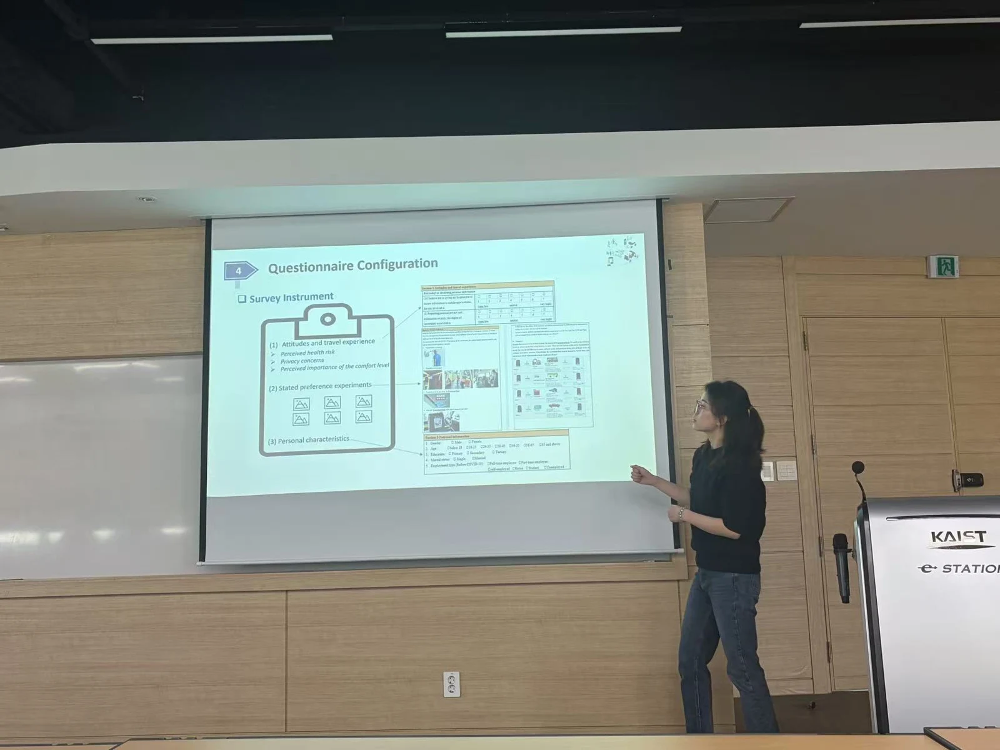

Teaching
Experimental Teaching
Traffic Safety and Future Mobility
Teaching Assistant · KAIST · February–June 2026
Designed and taught a five-week laboratory module built around paired driving-simulator experiments. Students progressed from platform orientation and experimental participation to data preprocessing, analysis, and group presentations.
Secured KRW 3.2 million in KAIST CELT support to develop experimental teaching materials.
Methods Instruction
Travel Behavior and Analysis
Teaching Assistant · KAIST · September–December 2025
Delivered a tutorial on stated-preference survey design and econometric analysis.
